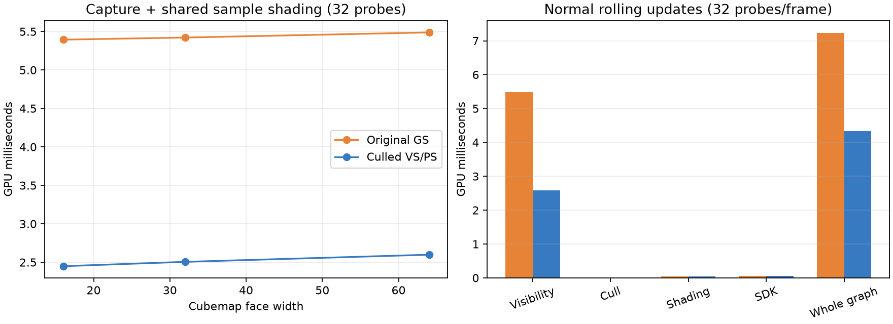

在SponzaLambert、1080p、方向光50、每帧32个probe、每probe256个DDGI方向、cubemap每面32²下，完整图耗时从 7.229 ms 降到 4.340 ms，减少 40.0%。原射线更新仍保留为默认后端；光栅模式下默认启用新的捕获优化。
原版把全场景三角形交给32个GS实例，每个实例再检查6个面。三角形的粗剔除已经发生在大量GS工作之后。光栅还必须处理场景几何与六面覆盖；射线后端只查询256个方向，并利用BVH跳过无关几何。减少cubemap像素不能消除这部分开销。
新的组织：GPU计算可见的“mesh实例 × probe面” → 分别生成16/32位索引的间接绘制列表 → 普通VS/PS直接写192层纹理 → 按原DDGI方向读取命中并执行原有着色 → SDK更新八面体贴图 → 屏幕查询 → Accumulate → Display。没有GS几何放大。物体世界包围盒进行保守六平面测试；动态、蒙皮、顶点动画物体不做包围盒剔除，无索引场景回退原路径。尚未做meshlet或遮挡剔除。
核对源码版本 6c19b945079a46c1dfbacece38ae4c288364dabc：LightProbeGrid每批8个probe，用48个子相机的ArrayCamera和2D atlas组织捕获；Renderer用FrustumArray做物体级联合视锥剔除。WebGPUBackend逐子相机设置viewport并绘制；这一版本的循环只有layers测试，未见逐子相机的物体视锥测试。不能把“一次render调用”理解成只绘制一次几何。我们的方案参考其批量组织，额外实现了每个probe面的GPU剔除。
当前cubemap为32² × 6＝6144像素/probe，用于捕获几何；DDGI irradiance八面体有效区域6²（含边框8²），distance有效区域14²（含边框16²），用于存储滤波后的结果。角色不同，不能直接视为相同分辨率。捕获后仍只着色原有256个DDGI方向，未给6144个像素全部计算radiance；直接光阴影仍使用光追。
| 正常轮转，GPU ms | 旧GS | 新剔除＋VS/PS | 减少 |
|---|---|---|---|
| 几何捕获 | 5.480 | 2.579 | 52.9% |
| probe更新整体 | 5.588 | 2.692 | 51.8% |
| 完整RenderGraph | 7.229 | 4.340 | 40.0% |

| 每probe捕获像素 | 旧捕获＋样本着色 ms | 新捕获＋样本着色 ms |
|---|---|---|
| 16² × 6 | 5.395 | 2.449 |
| 32² × 6 | 5.422 | 2.506 |
| 64² × 6 | 5.488 | 2.598 |
分辨率消融固定probe场和起始位置0/5000/10000，每个位置按ABBA顺序测4次，每次预热64帧、记录256帧；这里冻结SDK更新以隔离捕获。正常轮转测试恢复SDK更新、每帧32probe，ABBA各记录1024帧、起始cursor一致。Profiler记录去掉前4条后求均值，再对各轮等权平均。GPU为RTX5070；其他程序不争用GPU。统计读回、校验pass均不计入测量。正常计时不是新的一轮画质收敛实验。
先以全量射线更新4096帧得到相同的probe位置，再冻结probe场，逐批遍历全部10648个probe，对32²六面逐像素比较新旧几何命中。共比较 65,421,312 个像素，其中旧版命中 63,457,177 个。新版少画 0、多画 0、非有限结果 0。
两边都命中但位置差超过1mm的像素 25,736 个（占旧版命中 0.04056%），材质ID不同 27,858 个；相同三角形上超过1mm的位置差 0 个，最大位置差 0.5403 场景单位。因此不宣称逐位相同。差异出现在不同三角形取胜的像素；绘制顺序改变以及共面/边缘深度竞争是可能原因，尚未逐像素归因。本次验证说明所测静态Sponza下未检出包围盒剔除导致的空洞，不等于已验证所有动态场景或重新测过稳定PT误差。
保留旧模式便于复核：光栅开关 rasterProbeUpdate，新捕获开关 optimizedProbeCapture（默认true，界面Cull objects per probe face），分辨率 probeCubemapSize。八面体存储、SDK积分、probe方向数量、4/8点插值均保持原流程。仍慢于之前约1.88ms的射线图基线；下一步更有价值的是meshlet粒度剔除或更少的捕获面，而非单纯降低贴图分辨率。
复现脚本：tests/ddgi/probe_capture_optimization.py、probe_capture_validation.py。汇总数据 · 逐批校验数据。原画质报告保留在 光栅与射线更新对比，没有用本次捕获消融结果替代其收敛指标。